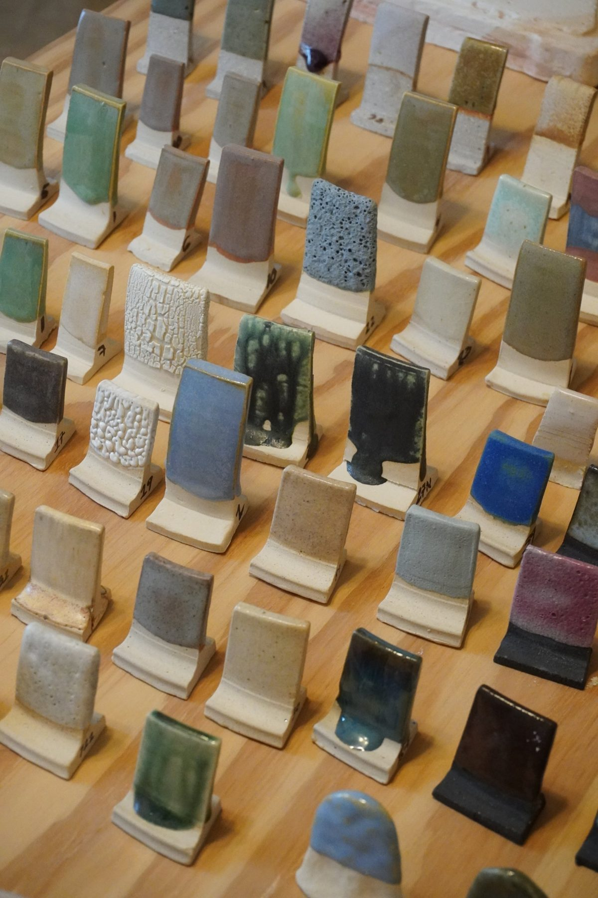

[Foto]
[Nombre]
[Rol]
[Unas líneas sobre ella]
Aquí el error es parte del proceso, no hay prisa por producir y cada quien explora a su ritmo. Entre todas hemos desarrollado más de 50 esmaltes propios.

Fundadora y maestra
Ceramista, investigadora y maestra. Estudió sociología y llegó al barro con una clase en el MARCO; desde entonces no lo ha soltado. Para ella, el barro enseña presencia y paciencia. Su obra se inspira en el mar, las piedras y las montañas, en los verdes y cafés de la tierra.
[ Lee su entrevista en Nativas → ]El equipo
[Rol]
[Unas líneas sobre ella]